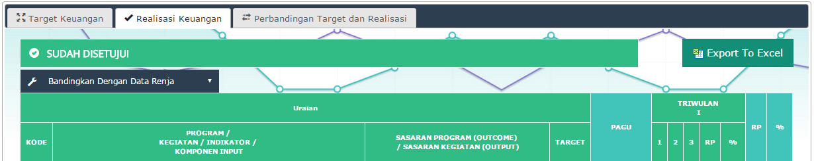
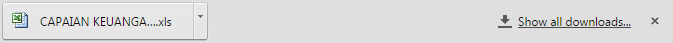
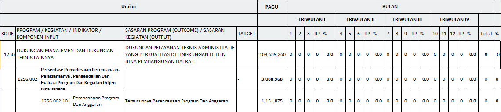

Fitur Export dilakukan sebagai laporan , bentuk laporan tersebut berupa table yang ditampilkan dalam bentuk bulanan maupun triwulan , berikut adalah langkah demi langkan membuat / melakukan export laporan dalam bentuk excel.
1. Masuk kedalam menu capaian .
2. Pilih Salah Satu TAB yang akan dilakukan proses Export.
3. Klik Tombol Export yang Tersedia di sebelah Kanan.

Gambar Tombol Export Tersedia Di Sebelah Kanan
4. File Akan Terdownload ke Komputer Anda

Gambar File TerDownload Ke Local
5. File Bisa Langsung dibukan dengan Extensi *xls.

Gambar File Excel Yang Sudah Di Download Ke Local
Created with the Personal Edition of HelpNDoc: Free PDF documentation generator